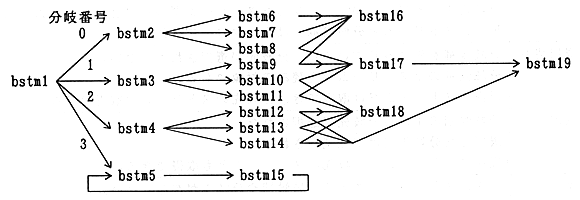

(a) In this scenario, the first branch stream to be read is bstm1. Branch playback library Start reading bstm1.(b) The application acquires the branch stream currently being read and sets it in the decoder.
(c) The branch reproduction library reads the branch candidate (possibility to be taken out next) after reading bstm1. Starts reading bstm2, bstm3, bstm4, bstm5, which is a branch stream with. By prefetching the branch candidate stream in this way, the CD buffer can be used effectively, and A moody branch is possible.
(d) The application acquires an event from a pad input or the like and selects a branch destination. Suppose that branch numbers 0 to 3 are assigned to the branches to bstm2, bstm3, bstm4, and bstm5, and 1 indicates If determined, reading of bstm2, bstm4, and bstm5 that are no longer necessary will be cancelled. If necessary, the application acquires the branch destination stream and sets it in the decoder.
(e) When the extraction of bstm1 is completed, the extraction of bstm3 is started. When the application specifies branch execution for the branch playback server, the branch playback library Ri starts reading bstm9, bstm10, and bstm11 as in (c).